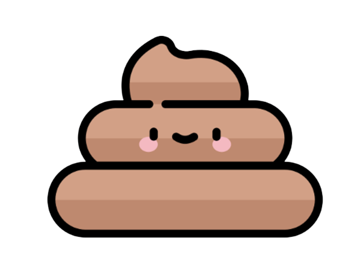

간식 좋아!

| '구름이'의 응가는 “3” 유형입니다 |
| 해당 증상으로는 ~~ |
| 우려되는 질병으로는 ~~~~ |
| 1. 똥의 크기, 양 강아지 똥의 크기와 양은 강아지가 먹은 양 그리고 강아지 크기의 영향을 받아. 그래서 소형견이라면 작은 똥을 조금, 대형견이라면 큰 똥을 많이 누게 되는 거지. 강아지에게 적정량의 사료와 간식을 주고 있다면 크게 걱정할 필요는 없어. 하지만 갑자기 똥의 크기가 달라졌다면 주의가 필요해! 크기가 커졌다면 강아지가 음식을 제대로 소화하지 못해 영양소 섭취가 잘 안되고 있다는 의미일 수 있어. 반대로 크기가 작아졌다면 강아지가 위장 문제, 장폐색 등으로 식욕을 잃었다는 의미일 수 있으니 주의해야겠지. 2. 강아지 똥의 모양 정상적인 강아지 똥 모양은 통나무같이 길쭉하고 약간 두툼한 모양이야. 또, 부드럽지만 단단해 집었을 때 형태가 무너지지는 않아야 하고. 만약 변비나 설사 증세가 있다면 아래와 같은 형태의 똥을 누게 되니까 참고해 줘. <비정상적인 강아지 똥의 모양> 딱딱한 토끼 똥 형태 : 변비 부드러운 토끼 똥 형태 : 변비기가 꽤 있음 통나무 모양이지만 덩어리가 많은 형태 : 약간의 변비기 흐물흐물한 형태 : 약간의 설사기 완전히 물 같은 형태 : 설사 만약 강아지의 변비, 설사가 지속된다면 유산균을 급여하는 게 많은 도움이 될 수 있어. 3. 똥 싸는 빈도수 강아지가 하루에 똥을 누는 횟수 자체는 크게 중요하지 않아. 강아지마다 똥을 누는 횟수는 모두 다르거든. 일반적으로는 1~4회 정도 눈다고 해. 사실 강아지가 똥 누는 횟수보다는 그 빈도수가 매일 일정한지 확인하는 게 더 중요해. 갑자기 강아지 똥 싸는 빈도수가 달라졌다면 건강에 문제가 생겼다는 의미일 수 있어. 강아지가 2일 이상 똥을 누지 않는다면 변비를 의심할 수 있어. 만약 똥을 5일 이상 누지 않았다면 대장에 변이 가득 쌓여 거대 결장증이라는 질병으로 이어졌다고 볼 수 있어 🙁 반대로 갑자기 똥을 너무 많이 싼다면 과식, 급작스러운 사료 변경, 박테리아 감염 등이 원인일 수 있어. 강아지 식습관에 문제가 없다면 최근 강아지가 스트레스를 받을 수 있는 일은 없었는지 확인해 보자. |
|
'구름이'와 같은 증상을 겪은 온라인 검색결과가 '7'건 있습니다. |
|
'구름이'와 같은 증상을 겪은 DCare 커뮤니티 글이 '5'건 있습니다. |
| 수의사 선생님과 상담하시겠습니까? |